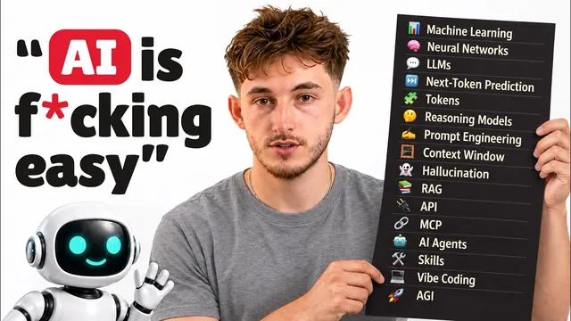

비전공자를 위한 AI 기초 49분 정리

원본 영상 보기 →
- '책상' 하나로 컨텍스트·메모리·RAG·웹 검색이 다 설명돼요
- 자동화와 에이전트를 가르는 기준은 '다음 단계를 누가 고르느냐'예요
- 모델 성능 비교는 벤치마크가 아니라 내 일로 해야 해요
한 줄 요약
AI 에이전트, LLM, MCP, AGI까지 매일 듣지만 헷갈리는 AI 용어 46개를 Nick Puru가 기술 배경 없이도 알아듣게 풀어 줘요. 모델이 만들어지는 원리부터 프롬프트, 컨텍스트, RAG, 에이전트, 로컬 AI까지 한 번에 정리하고 마지막에 무엇부터 배우면 좋을지 순서도 알려 줍니다.
전체 내용 정리
AI라는 기계는 데이터 → 학습 → 모델 → 추론, 이 네 가지로 굴러가요
Nick은 AI를 "예전에는 사람 두뇌가 필요했던 일을 컴퓨터가 하는 것"이라고 정의해요. 얼굴을 보면 잠금이 풀리는 휴대폰, 과거 수백만 건의 이동 기록으로 6시 42분 도착을 예측하는 지도 앱, 다음 영상을 골라 주는 피드가 다 AI예요. 갤럽 조사에서 미국인 99%가 지난주에 AI 제품을 하나 이상 썼지만 AI를 썼다고 답한 사람은 36%뿐이었다고 해요. 알든 모르든 이미 쓰고 있다는 얘기죠.
머신러닝(machine learning)은 규칙을 일일이 손으로 쓰는 대신 예시로 가르치는 방식이에요. "개는 귀가 있고 꼬리가 있고 다리가 네 개"라고 쓰는 게 아니라, '개'라고 표시된 사진 수천 장을 보여 주면 컴퓨터가 패턴을 스스로 찾아요. 아이에게 '개'라는 말을 가르치는 방식과 같다는 거죠. 흔히 말하는 피드 '알고리즘'도 수백만 명이 본 것과 넘긴 것에서 컴퓨터가 학습한 단계 묶음이에요.
신경망(neural network)은 줄줄이 연결된 작은 조광 스위치로 가득 찬 벽이라고 떠올리면 쉬워요. 사진이 한쪽으로 들어가면 반대편에서 "개다, 아니다" 같은 답이 나오고 학습은 정답이 더 자주 나올 때까지 스위치를 조정하는 일이에요. 뇌가 아니라 근본적으로 수학이라는 게 Nick의 설명입니다. 딥러닝(deep learning)은 줄(층)이 아주 많은 신경망이고 사실상 모든 챗봇 뒤에 있어요. 스위치가 수십억 개라 왜 그런 답을 냈는지 만든 사람조차 읽어 낼 수 없는데, 이걸 블랙박스라고 불러요.
수십억 개 스위치는 사람이 맞추는 게 아니라 학습(training)이 맞춰요. 처음엔 스위치를 무작위로 두고 엄청난 양의 예시를 넣으면서 틀릴 때마다 아주 조금씩 조정해요. 이 예시 더미가 학습 데이터고 챗봇이라면 인터넷의 상당 부분이나 책, 코드 같은 것들이에요. 학습은 수천 개 칩에서 몇 달씩 걸리고 제품을 보기 전에 끝나요. 그래서 대화하는 동안 학습하는 것도, 페이지를 복사해 저장하는 것도 아니고 그 안의 패턴만 배운다는 점을 Nick은 강조해요.
각 스위치의 설정값이 파라미터(parameter)고 가중치(weight)라고도 불러요. 모델 이름에 붙은 70B는 파라미터 700억 개라는 뜻이에요. 2019년 GPT-2는 15억 개였고 지금 가장 큰 모델은 1조 개가 넘는 것으로 알려져 있어요. 모델 안에는 문장도, 사실도, 규칙도 없고 이어 붙이면 문장을 맞게 끝내는 아주 긴 숫자 목록만 있다는 거죠.
이 파라미터를 저장한 완성 파일이 모델이에요. Opus 5.5도, GPT6 Astra도 각각 다른 숫자 파일이고 Claude Code에서 /model을 치면 나오는 줄 하나하나가 별개 파일이에요. ChatGPT나 Claude처럼 직접 입력하는 건 애플리케이션이고 모델은 그 안의 엔진이라는 구분이에요. 마지막으로 추론(inference)은 모델을 쓰는 일이에요.
엔터를 누를 때마다 입력이 숫자 파일을 지나 답이 나오는 게 한 번의 추론이고 쓰는 동안 모델은 바뀌지 않아요. Nick은 의대가 학습, 환자 진료가 추론이라는 비유를 들어요. 환자를 본다고 의대로 돌아가지는 않으니까요.
답은 '다음 토큰 맞히기'를 반복해서 나와요
대부분의 AI는 분류하거나 점수를 매겨요. 스팸 필터는 메일을 두 칸 중 하나에 넣고 은행은 카드 결제에 사기 점수를 매기죠. 반면 생성형 AI(generative AI)는 새 텍스트, 이미지, 영상, 음성을 만들어요. ChatGPT가 메일을 써 주는 건 생성형이고 그 메일이 스팸인지 판단하는 필터는 그냥 AI예요.
LLM(대규모 언어 모델)은 방대한 텍스트로 학습하고 파라미터가 수십억 개라 'Large', 텍스트를 읽고 쓰니 'Language', 학습된 파일이라 'Model'이에요. 글로 작동하는 생성형 AI이고 여러분이 써 본 모든 챗봇 안에 들어 있어요. 이미지 생성기는 생성형이지만 LLM은 아니고요. Nick에 따르면 4월 유고브 조사에서 LLM이 무슨 뜻인지 말할 수 있는 미국인은 34%뿐이었어요.
GPT는 Generative Pre-trained Transformer의 줄임말이에요. Pre-trained는 여러분 손에 오기 전에 학습이 끝났다는 뜻이고 트랜스포머(transformer)는 2017년 구글 연구진이 낸 논문 'Attention is All You Need'의 설계예요. 지금 거의 모든 챗봇 모델이 이 설계 위에 있어요. 다음 단어를 고를 때 앞의 모든 단어를 돌아보며 지금 어떤 단어가 가장 중요한지 가늠하는 방식이라, "the bank was steep and the river was cold"에서 bank가 ATM 있는 은행이 아니라 강둑이라는 걸 알아낸다고 해요. GPT는 OpenAI의 브랜드명이기도 해서 GPT6는 모델, ChatGPT는 애플리케이션이에요.
모델이 답할 때 하는 일은 사실 하나예요. 지금까지의 내용을 읽고 다음 작은 텍스트 조각을 맞히고, 그걸 붙여 다시 읽고 또 맞히는 걸 답이 끝났다고 판단할 때까지 반복해요. 글자가 하나씩 올라오는 건 로딩 애니메이션이 아니라 실제로 조각을 하나씩 만드는 모습이에요. 모델 안에는 데이터베이스도, 검색도, 사실 색인도 없어요. 그런데 사람들은 45%가 데이터베이스에서 정답을 찾는다고 21%는 대본을 따른다고 답해서 약 3분의 2가 일종의 조회라고 생각한다고 해요. 챗봇이 웹을 검색하는 건 애플리케이션이 켜는 별개 기능이에요.
토큰(token)은 텍스트 조각이에요. 흔한 짧은 단어는 보통 1토큰, 긴 단어는 2~3토큰으로 쪼개져요. 토큰이 중요한 건 가격과 사용량이 전부 토큰 단위로 매겨지기 때문이에요(암호화폐 토큰과는 무관해요). 모델을 직접 쓰면 100만 토큰당 요금을 내는데, 보내는 입력보다 모델이 쓰는 출력이 더 비싸요.
Nick에 따르면 Opus 5.5는 입력 100만 토큰당 약 $4, 출력 $20이고 1만 단어 문서를 넣고 1만 단어 답을 받으면 약 11센트 정도예요. 모델 간 차이는 엄청나서 GPT6 Luna는 입력 100만 토큰당 10센트, GPT6 Astra는 $10로 100배 차이가 나요. 구독제는 결국 토큰 허용량이라, 사용 한도에 걸렸다는 건 그 기간 허용량을 다 썼다는 뜻이에요. Nick은 에이전트가 토큰을 아주 빨리 태우기 때문에 긴 에이전트 작업 도중에 한도에 자주 걸린다고 해요.
추론 모델(reasoning model), 흔히 생각하는 모델(thinking model)이라 부르는 건 답하기 전에 풀이 과정을 먼저 써 내려가는 모델이에요. 긴 나눗셈을 머릿속 대신 종이에 푸는 것과 비슷해서 어려운 문제에 더 믿을 만하지만 풀이도 다 텍스트라 느리고 토큰이 더 들어요. 모델 선택 창의 빠름·낮음·중간·높음 옵션이 이 정도를 고르는 거예요. 예전엔 "단계별로 생각해"를 프롬프트에 직접 쳤지만 지금은 내장돼 있고 이렇게 쓴 풀이를 사고의 사슬(chain of thought)이라고 불러요. 더 큰 모델이 아니라 같은 파일이 시간을 더 쓰는 것이고 Nick은 이게 유용한 기법이지 마음은 아니라고 선을 그어요.
챗봇과 대화할 때 실제로 다루는 것들: 앱, 프롬프트, 컨텍스트, 메모리
챗봇은 입력하는 애플리케이션 자체예요. ChatGPT, Claude, Gemini, Copilot이 가게 앞이고 모델은 뒤편에 있어요. AI 어시스턴트도 같은 말이에요. 코파일럿(copilot)은 Word 안의 Copilot, Gmail 안의 Gemini처럼 이미 쓰는 앱에 들어간 AI이고 마이크로소프트 브랜드명이기도 해서 헷갈려요. AI 래퍼(wrapper)는 다른 회사 모델 위에 만든 앱이라 화면만 그들 것이고 밑에는 GPT나 Claude가 있어요. Nick은 광고되는 AI 앱 상당수가 바로 이 래퍼라고 봐요.
모델·애플리케이션·회사도 구분해요. ChatGPT는 앱, GPT6는 모델, OpenAI는 회사고 Claude는 앱, Opus 5.5는 모델, Anthropic은 회사예요. 차·엔진·자동차 회사의 관계와 같죠. 회사마다 모델을 크기별로 팔아요.
Anthropic은 Fable, Opus, Sonnet, Haiku가 있고 OpenAI는 새로 낸 GPT6 Astra와 Sol, Luna, Terra, 구글은 Gemini Pro와 Flash가 있어요. 큰 모델은 가장 똑똑하지만 느리고 Haiku·Luna·Gemini Flash 같은 작은 모델은 빠르고 싸서 쉬운 일에는 충분해요. 프런티어 모델(frontier model)은 지금 쓸 수 있는 가장 뛰어난 모델로, Nick은 Anthropic은 Fable, OpenAI는 Astra, 구글은 Pro를 꼽아요. 이름은 매달 바뀌니 외우는 데 매달리지 말라는 조언도 덧붙여요.
Nick은 "누구나 같은 AI를 쓴다"는 말도 사실이 아니라고 봐요. 얼마 전까지 Fable은 소수 기업에만 제공됐고 나라마다 쓸 수 있는 AI에 제한이 있으며 미국 정부도 Anthropic 제품에서 멀어지려 한다고 언급해요. 무엇보다 돈을 더 쓰면 더 크고 강한 모델을 더 오래 쓸 수 있어서 ChatGPT 팀 요금제 같은 걸 쓰는 사람은 그렇지 못한 사람보다 산출물을 2배, 3배, 4배로 늘릴 수 있다는 거예요.
프롬프트는 모델이 응답하도록 입력하거나 붙여 넣는 모든 것이고 프롬프트 엔지니어링은 결국 분명하게 요청하는 일이에요. Nick은 대부분의 나쁜 프롬프트를 고치는 세 가지로 목표, 대상, 형식을 꼽아요. 예를 들어 "인보이스 결제가 3주 늦은 고객에게 보낼 메일을 다시 써 줘. 친근하지만 직설적으로, 짧은 두 문단, 결제일을 묻는 요청은 하나만"이라고 하면 세 가지가 다 들어 있어요. 첫 답은 초안으로 보고 "더 짧게", "더 따뜻하게", "둘째 줄 빼"처럼 고칠 점을 말하면 보통 두 번째 답을 쓰게 된다고 해요.
이름 붙은 기법 네 가지도 짧게 짚어요. 제로샷·퓨샷(zero-shot·few-shot)은 예시 없이 묻거나 예시 몇 개를 주는 것이고 "마음에 든 제목 3개야, 이런 걸로 5개 더"처럼 주면 그 모양을 따라 해서 스타일을 맞추는 가장 빠른 길이에요. 역할 프롬프팅은 "편집자처럼", "이 계약서를 읽는 변호사처럼"으로 어조와 관점을 정하는데, 지식을 더해 주진 않으니 사실이 아니라 어조에 쓰라고 해요. 프롬프트 체이닝은 "제안서 써 줘" 대신 "메모에서 고객 문제를 나열해 → 문제별 해결책을 줘 → 그걸로 제안서를 써"처럼 나눠 단계마다 확인하는 방식이에요. 메타프롬프팅은 AI에게 프롬프트를 쓰게 하는 것이고 "시작하기 전에 필요한 질문을 먼저 하고 그다음 프롬프트를 써 줘"라는 한 줄이 잘 통한다고 해요.
시스템 프롬프트는 앱이 모든 메시지 앞에 붙이는 숨은 지침이에요. 어시스턴트가 누구인지, 말투, 하지 말 것, 오늘 날짜가 들어가고 모델은 여러분의 글을 읽기 전에 이걸 먼저 읽어요. Anthropic은 Claude 앱의 시스템 프롬프트를 공개해요. Gemini의 Gems, Claude의 프로젝트도 자기 지침과 파일을 갖춘 챗봇이라는 같은 아이디어고 그 첫 버전인 OpenAI의 맞춤 GPT(custom GPTs)는 12월 11일에 종료된다고 해요. agents.md나 claude.md도 나와 회사 정보, 말투 규칙을 적어 두면 프롬프트 전에 읽는 기본 파일이라 비슷한 역할이에요.
컨텍스트 윈도(context window)는 한 채팅에서 모델이 한 번에 볼 수 있는 전부예요. 시스템 프롬프트, 지금까지의 메시지, 넣은 파일이 다 토큰으로 계산돼요. Nick은 이걸 책상에 비유해요. 책상 위에 있는 건 한 글자도 빠짐없이 읽지만 책상 밖은 못 보고 학습은 몇 달 전에 읽은 것 같은 흐릿한 기억만 줘요. 최상위 모델은 보통 약 100만 토큰을 담고 Anthropic은 이를 약 55만 단어, 소설 여섯 권 정도로 본다고 해요. 그래서 "내 자료를 알아?"에 대한 답은 "책상 위에 있는 것만 안다"이고 무엇을 책상에 올릴지 정하는 게 컨텍스트 엔지니어링이에요.
긴 대화가 나빠지는 이유는 두 가지예요. 첫째, 책상이 크다고 완벽히 기억하는 건 아니에요. 한 연구팀이 18개 모델에 점점 긴 입력을 넣었더니, 창이 다 차기 한참 전부터 모든 모델이 나빠졌어요. 이걸 컨텍스트 로트(context rot)라고 불러요.
둘째, 책상이 꽉 차면 앱이 오래된 메시지를 버리거나 요약으로 압축하는데, 말해 주지 않는 앱도 있어요. Claude는 알려 주는데, Nick의 화면에서는 100만 토큰 중 약 12%를 쓴 상태였고 ChatGPT에서는 47만 5,000토큰 중 약 13만 2,000토큰, 28% 정도를 쓰고 있었어요. 둘 다 대화를 압축하는 기능이 있지만 해결책은 지루할 만큼 단순해요. 새 채팅을 열고 꼭 알아야 할 두어 가지만 붙여 넣으면 돼요.
메모리는 앱이 적어 두는 노트예요. 모델은 바뀌지 않고 책상은 새 채팅마다 치워지니, 앱이 노트를 남겼다가 새 채팅 시작 때 책상에 올려 주는 거죠. 설정에서 직접 보고 고치거나 끌 수 있고 "나에 대해 어떤 노트가 있어?"라고 물어봐도 돼요. 직접 쓴 맞춤 지침, 대화에서 모델이 적은 저장된 메모리, 예전 대화를 돌아보는 채팅 기록, 아무것도 안 남기는 임시 채팅이 있어요.
메모리는 다음 주에 나를 기억하는 이유, 컨텍스트 윈도는 이 채팅의 앞부분을 잊는 이유예요. 친구의 ChatGPT와 내 것이 다르게 쓰는 것도 모델이 달라서가 아니라 노트가 달라서라고 해요. 멀티모달(multimodal)은 텍스트 말고도 이해하는 하나의 모델이에요. 메뉴 사진을 넣고 글루텐 프리를 묻거나 오류 화면을 캡처해 물을 수 있고 보는 능력은 컴퓨터 비전(computer vision)이라는 옛 이름이 있어요.
모델이 아는 범위와, 더 알게 만드는 방법이 따로 있어요
학습 데이터는 특정 날짜에서 끊겨요. 이게 지식 컷오프(knowledge cutoff)예요. Nick에 따르면 Opus 5.5는 2026년 6월, 더 싼 옛 모델인 Haiku 4.5는 2025년 2월에서 멈춰요. 1년 동안 뉴스 없이 지내다 돌아온, 똑똑하고 박식하지만 그 사이 일은 모르는 사람과 같다는 비유예요. 앱이 오늘 날짜는 알려 주니 시간이 흘렀다는 건 알지만 그 사이 무슨 일이 있었는지는 몰라요.
환각(hallucination)은 자신 있게 틀린 답이에요. 없는 통계, 아무도 안 한 인용, 그럴듯한 링크가 실제로는 없는 출처 같은 것들이고 AI가 지어낸 판례를 인용해 법원 서류를 낸 변호사들이 벌금을 문 일도 있었다고 해요. 왜 "모른다"고 하지 않을까요? Nick은 이유를 두 가지로 설명해요. 다음 단어를 추측하는 구조라 맞는 것 같은 추측과 실제로 맞는 추측이 똑같아 보인다는 것, 그리고 2025년 9월 4일 OpenAI 연구 논문에 따르면 학습 때 빈칸은 0점, 추측은 점수를 받을 수 있는 시험처럼 채점돼 모른다고 하기보다 추측하는 쪽이 보상받았다는 거예요. 의도가 없으니 거짓말은 아니지만 숫자·이름·날짜·출처가 나오면 어디서 왔는지 묻고 출처가 실제로 있는지 확인하라고 권해요.
웹 검색을 켜면 앱이 오늘의 웹을 읽어 와 책상에 올리고 모델은 그걸 읽어요. 여전히 모델이 직접 찾는 게 아니라 앱이 가져온 페이지를 읽는 거예요. 답을 읽은 내용과 출처에 묶는 게 그라운딩(grounding), 몇 분에 걸쳐 수십 번 검색하고 출처가 달린 보고서를 주는 게 딥 리서치(deep research)예요. 구글은 페이지를 찾아 주고 검색을 켠 챗봇은 페이지를 읽고 답을 써 준다는 차이예요.
RAG(검색 증강 생성, retrieval augmented generation)는 모델이 답하기 전에 여러분의 파일을 검색하게 하는 거예요. 문서가 200개면 책상에 다 못 올리니, 앱이 질문과 맞는 페이지를 찾아 책상에 올리고 모델은 거기서 답해요. 단어가 아니라 의미로 찾기 때문에 '환불'을 물으면 '돈 돌려받기' 같은 표현도 찾아내는데, 이를 가능하게 하는 게 임베딩(embedding)이고 임베딩은 벡터 데이터베이스에 저장돼요. ChatGPT와 Claude의 프로젝트도 파일이 책상에 다 안 들어가면 이 방식으로 바뀐다고 해요. 계정을 외우진 못해도 이름을 대면 파일을 찾아 답하는 콜센터 상담원과 같다는 비유예요.
파인튜닝(fine-tuning)은 본 학습이 끝난 뒤 내 예시로 추가 학습하는 거예요. 주로 바뀌는 건 사실이 아니라 스타일과 행동이라, Nick은 "역사 수업이 아니라 억양 교정"이라고 표현해요. 늘 회사 말투로 답하게 하려면 파인튜닝이 맞지만 내 가격표를 알게 하려면 RAG나 커넥터를 써야 해요. 학습은 모델을 처음부터 만들고 파인튜닝은 완성된 모델을 조정하고 프롬프트 속 예시는 그 채팅에서만 유효해요. Nick에 따르면 Anthropic API는 파인튜닝을 제공하지 않고 OpenAI도 줄여 가고 있어서 대부분의 사업자는 쓸 일이 거의 없을 거라고 해요.
일을 시키는 단계: API, MCP, 에이전트, 스킬, 루프
API는 소프트웨어끼리 대화하는 방식이에요. Nick은 식당에 비유해요. 손님은 여러분, 주방은 모델이고 주문을 받아 주방에 전하고 접시를 가져다주는 웨이터가 API예요. ChatGPT에 입력하면 앱이 OpenAI API로 모델에 메시지를 보내고 자체 AI 제품을 만드는 회사도 같은 주방에 주문하는 셈이에요. 주문에는 어떤 모델인지와 메시지가 들어가고 계정에 묶인 비밀번호 같은 키(key)를 받아 토큰당 요금을 내요. 스프레드시트 분석처럼 도구가 필요할 때도 모델이 머릿속으로 계산하는 게 아니라 작은 요청을 쓰고 앱이 실행해 결과를 책상에 올려요.
문제는 도구마다 출입문이 제각각이었다는 거예요. 그래서 나온 게 MCP(Model Context Protocol), 어떤 AI 앱이든 어떤 도구든 쓸 수 있게 하는 공유 플러그 표준이에요. 모델도 AI도 아닌 그냥 표준이에요. 예전엔 구글 캘린더 같은 연결을 앱마다, AI마다 손으로 만들어야 했죠. Anthropic이 MCP를 만들어 2024년 11월에 오픈 표준으로 공개했고 업계 전체로 퍼지면서 2025년 12월에 Linux Foundation에 넘겨 이제 모두의 것이 됐어요. 가게마다 다른 카드를 들고 다니지 않아도 되는 은행 카드와 같다는 비유고 Claude나 ChatGPT의 'Gmail 연결', 'Slack 연결' 커넥터 대부분이 MCP로 돌아간다고 해요.
AI 에이전트는 다음 단계를 스스로 정하고 도구로 실행하는 AI예요. 목표를 주면 단계를 짜서 하나 하고 결과를 보고 다음을 골라요. 챗봇은 답을 하고 에이전트는 일을 하는 거죠. 사업하는 사람에게 중요한 구분은 자동화와 에이전트예요. Zapier, n8n, Make.com 같은 자동화는 내가 설계한 고정 단계를 따라요(폼이 들어오면 행 추가, 메일 발송, 매번 같은 길).
에이전트는 길을 스스로 골라요. 미리 써 둔 길 안내와 매 갈림길에서 방향을 정하는 운전자의 차이라는 비유예요. Nick은 프로젝트나 Gem은 여전히 사전 브리핑된 챗봇이고 에이전트로 팔리는 것 중 상당수는 자동화 위에 챗봇 기능을 얹은 것이라고 봐요. 판별 기준은 다음 단계를 스스로 고르느냐예요. 멀티 에이전트는 여럿이 한 일을 나누는 것이고 'AI 직원'은 솔직히 영업용 이름이라고 해요.
스킬(skill)은 지침을 저장한 폴더예요. 방법 설명과 필요한 파일이 들어 있고 에이전트는 작업이 필요로 할 때만 열어요. 그 요리를 주문받았을 때만 꺼내는 레시피 카드 같은 거죠. Nick은 유튜브 대본 초안을 쓰는 스킬을 예로 드는데, 규칙을 담은 skill.md와 문장 말투를 담은 두 번째 파일이 있어서 대본을 요청하면 에이전트가 이 폴더를 찾아 따르고 다른 요청엔 열지 않아요. MCP는 앱에 접근할 권한을, 스킬은 노하우를 준다는 게 둘의 차이예요. Anthropic이 2025년 10월에 소개하고 12월에 형식을 공개했으며 OpenAI Codex, Google Gemini CLI, GitHub Copilot, Cursor 등이 채택해 표준이 됐다고 해요.
루프(loop)는 '끝난 상태'를 정의해 두면 에이전트가 도달할 때까지 다시 시도하는 방식이에요. 보통은 내가 답을 확인하고 수정을 요청하지만 루프에서는 에이전트가 결과를 완료 기준과 비교해 스스로 다시 해요. Nick은 "이 데이터로 영업 대시보드를 만들어. 페이지가 뜨고 필터가 작동할 때까지 멈추지 마"라고 한 번 지시했더니, 에이전트가 페이지를 쓰고 브라우저로 열어 고장 난 필터를 발견해 고치고 다시 확인한 뒤에야 끝났다고 했다는 사례를 보여 줘요.
요령은 에이전트가 실제로 테스트할 수 있는 기준을 주는 거예요. "좋게 만들어"는 루프가 아니고 "페이지가 오류 없이 뜨고 월 필터가 작동한다"가 루프예요. 그래도 최종 확인은 사람이 해요. 이게 '휴먼 인 더 루프(human in the loop)'예요.
컴퓨터 사용(computer use)은 사람처럼 화면을 보고 버튼을 찾아 클릭하고 입력하는 에이전트예요. Anthropic이 2024년 10월 첫 버전을 냈고 지금은 OpenAI 최신 모델의 대표 기능이며 Perplexity Comet이나 Chrome의 자동 브라우징 같은 브라우저 에이전트도 같은 아이디어예요. Nick은 MCP로 쉽게 연결된다면 MCP를 쓰라고 해요. 빠르고 안정적이니까요. 컴퓨터 사용은 오래된 시스템이나 API가 없는 웹사이트처럼 플러그가 없을 때 쓰고 화면이 바뀌면 잘 깨져요. 다만 모델이 아주 똑똑해져서, Nick은 CRM인 GoHighLevel의 자동화·음성 에이전트 구축을 API로 못 하니 ChatGPT가 컴퓨터를 조종해 대신 만들게 한다고 해요.
바이브 코딩(vibe coding)은 원하는 걸 평범한 말로 설명하면 AI가 코드를 다 쓰는 방식으로 앱을 만드는 거예요. 코드는 읽지 않고 결과만 보면서 "이 버튼 파랗게", "로그인 추가해"라고 말하죠. 작년 2월 X 게시물 하나에서 시작된 말이 11월엔 콜린스 사전 올해의 단어가 됐다고 해요. 비개발자는 주로 Lovable, Replit, Base44, Claude 같은 브라우저 앱 빌더에서 하는데, 밑에는 Claude Code나 Codex 같은 코딩 에이전트가 있어요. 코딩 에이전트가 엔진이고 바이브 코딩은 보닛을 열지 않고 그걸 운전하는 거예요.
이미지·음성, 그리고 AI가 돌아가는 곳과 앞으로의 단어들
이미지·영상 생성은 설명을 입력하면 그림이나 영상이 만들어지는 거예요. 텍스트→이미지, 텍스트→영상, 사진을 주면 움직이게 하는 이미지→영상이 있고 최신 모델은 소리까지 넣어요. 대부분 디퓨전(diffusion) 방식을 써요. 신호 없는 옛 TV 같은 노이즈에서 시작해 단계별로 걷어 내면 그림이 나와요. Nick은 구글의 Nano Banana, GPT Image, Kling, Seedance, Veo를 현재 최고로 꼽고 자기 썸네일도 설명과 참고 사진 몇 장으로 이런 도구에서 만든다고 해요. 보낸 사진을 이해하는 건 멀티모달, 새로 만드는 건 생성이라는 구분도 짚어요.
음성은 네 가지가 자주 뒤섞여요. 음성→텍스트(받아쓰기, Zoom 회의 노트 작성기), 텍스트→음성(자연스러운 목소리로 읽기), 둘을 합쳐 말로 주고받는 음성 모드, 그리고 몇 초 분량의 목소리로 무엇이든 말하게 하는 음성 복제예요. 음성 에이전트는 실시간 전화에서 듣고 판단하고 답하고 예약까지 잡는 에이전트이고 AI 접수원은 직함이 붙은 음성 에이전트라고 해요.
GPU(그래픽 처리 장치)는 게임에서 수백만 픽셀을 동시에 그리려고 만든 칩인데, 신경망 속 수학도 수십억 개의 작은 계산을 한꺼번에 하는 같은 종류의 일이었어요. 그래서 게임용 칩이 AI의 칩이 됐고 대부분을 만드는 엔비디아는 세계 최대 기업 중 하나가 됐어요. 컴퓨트(compute)는 그 칩 파워의 총량, 데이터센터는 칩으로 가득 찬 건물이고 학습도 추론도 거기서 일어나요. 전력과 물 사용량은 정당한 질문이지만 모델과 건물에 따라 달라서, Nick은 뒷받침할 수 없는 숫자는 말하지 않겠다고 해요.
모델이 공개되는 방식은 셋이에요. 오픈 웨이트(open weights)는 완성 파일을 내려받아 직접 돌릴 수 있고 엄밀한 오픈 소스(open source)는 코드와 학습 데이터라는 레시피까지 줘요. 폐쇄형(closed)은 아무것도 못 내려받고 앱이나 API로 빌려 써요. GPT, Claude, Gemini가 폐쇄형이고 내려받을 수 있는 모델은 Hugging Face에 DeepSeek, 알리바바의 Qwen, Mistral 등 수백 개가 있어요. 곡 파일을 사는 것, 녹음 원본까지 받아 리믹스하는 것, 스트리밍만 하는 것의 차이와 같아요. '오픈'이라 불리는 모델 대부분은 웨이트만 주고 레시피는 안 줘서, 돌릴 수는 있어도 다시 만들 수는 없다는 점을 Nick은 짚어요.
오픈 웨이트 덕분에 가능해진 게 로컬 AI예요. 회사 서버 대신 내 컴퓨터나 휴대폰에서 모델을 돌리는 것이고 작은 모델은 노트북에 들어갈 만큼, 파라미터 수십억 개 정도라는 뜻이에요. Ollama, LM Studio, Open WebUI 같은 앱을 깔고 모델을 받으면 와이파이를 꺼도 대화할 수 있어요. 이유는 셋이에요. 아무것도 기기 밖으로 안 나가니 사적이고, 오프라인에서 되고 토큰당 요금이 없어요. 프런티어 모델만큼은 아니지만 많은 일에는 그럴 필요도 없다는 게 Nick의 판단이에요.
벤치마크(benchmark)는 모든 모델에 똑같이 주는 고정 시험이에요. 출시 때마다 "수학 몇 점, 코딩 몇 점, 경쟁 모델보다 3점 높음" 같은 차트가 나오고 익명 답변 두 개 중 사람들이 투표하는 Arena 같은 리더보드가 회사가 직접 만든 차트보다 공정해요. 다만 벤치마크는 모델이 벤치마크를 잘한다는 것만 말해 줄 뿐, 내 일을 잘한다는 건 말해 주지 않아요. 그래서 만드는 사람들은 eval, 곧 내 일로 하는 내 시험을 써요. 실제로 하는 일 10가지를 두 모델에 돌려 보고 더 잘한 쪽을 고르라는 거예요.
마지막은 AGI(범용 인공지능)예요. 지금까지의 모든 AI는 특정 일만 잘하는 좁은 AI(narrow AI)이고 프런티어 모델도 마찬가지예요. AGI는 대부분의 사고 노동을 사람만큼 해내는 AI라는 아이디어인데, 합의된 정의도 시험도 없어요. OpenAI 헌장은 "경제적으로 가치 있는 대부분의 일에서 인간을 능가하는 고도로 자율적인 시스템"으로 정의하고 다른 연구소는 조금씩 다르게 정의해요. 그래서 "AGI 시대에 오신 걸 환영합니다"는 측정이 아니라 출시 문구이고 어느 정의를 쓰는지 물어보라고 해요. 그 너머의 초지능(superintelligence)은 제품이 아니라 예측이고요.
용어를 다 익힌 뒤 무엇부터 배울지에 대해 Nick은 다섯 단계를 권해요. 첫째, 챗봇 하나를 골라 매일 실제 일에 쓰고 맞춤 지침을 설정하기(2026년 10월 기준으로는 ChatGPT나 Claude를 추천). 둘째, 목표·대상·형식으로 프롬프트를 쓰고 첫 답을 초안으로 다루기. 셋째, 내 파일과 지침으로 프로젝트를 만들어 내 자료를 책상에 올리기.
넷째, Gmail이나 Google Drive 같은 앱 하나를 연결해 도구와 MCP가 일하는 걸 보기. 다섯째, 이 모든 게 익숙해지면 Claude Code 같은 에이전트에 명확한 완료 기준을 준 실제 업무 하나를 맡기기예요. temperature, mixture of experts, 양자화(quantization), 튜링 테스트 같은 말도 듣게 되겠지만 지금은 건너뛰어도 된다고 해요. Nick이 가장 중요하다고 꼽는 건 에이전트에게 진짜 일 하나를 맡겨 보는 거예요.
핵심 인사이트
- '책상' 하나로 컨텍스트·메모리·RAG·웹 검색이 다 설명돼요: 모델은 바뀌지 않고 책상(컨텍스트 윈도)에 무엇이 올라가느냐만 달라져요. 메모리는 앱이 올려 주는 노트, 웹 검색과 RAG는 앱이 찾아다 올려 주는 페이지예요. 이 그림을 잡으면 "왜 내 자료를 모르지?", "왜 긴 대화가 망가지지?"에 스스로 답할 수 있습니다.
- 자동화와 에이전트를 가르는 기준은 '다음 단계를 누가 고르느냐'예요: Zapier·n8n·Make.com은 정해 둔 길을 따르고 에이전트는 길을 스스로 골라요. 에이전트로 포장된 것 중 상당수가 자동화에 챗봇을 얹은 것이라는 Nick의 지적은, 도구를 살 때나 고객에게 설명할 때 바로 쓸 수 있는 판별 기준이에요.
- 모델 성능 비교는 벤치마크가 아니라 내 일로 해야 해요: 벤치마크는 시험을 잘 본다는 뜻일 뿐이에요. 모델마다 입력 100만 토큰당 10센트에서 $10까지 100배 차이가 나니, 실제 업무 10개로 돌려 보는 eval이 비용과 품질을 같이 잡는 방법입니다.
오늘 당장 해볼 것
- ChatGPT나 Claude 설정에서 저장된 메모리와 맞춤 지침을 열어 보세요. 모델이 나에 대해 무슨 노트를 갖고 있는지 확인하고 내 업종·말투·자주 하는 일을 맞춤 지침에 적어 두면 다음 대화부터 답이 달라지는 게 보여요.
- 다음에 보낼 업무 메일이나 공지를 Nick의 예처럼 목표·대상·형식을 다 넣어 요청해 보세요. 첫 답은 초안으로 두고 "더 짧게", "더 따뜻하게"처럼 한 번 더 고쳐 달라고 하면 두 번째 답의 품질 차이가 분명히 느껴질 거예요.
- 반복 업무 하나를 골라 "끝난 상태"를 테스트할 수 있는 문장으로 써 보세요. 예를 들어 "표가 오류 없이 열리고 월별 합계가 원본과 일치한다"처럼요. 이 문장이 써지면 그 일은 Claude Code 같은 에이전트에 루프로 맡길 후보가 됩니다.